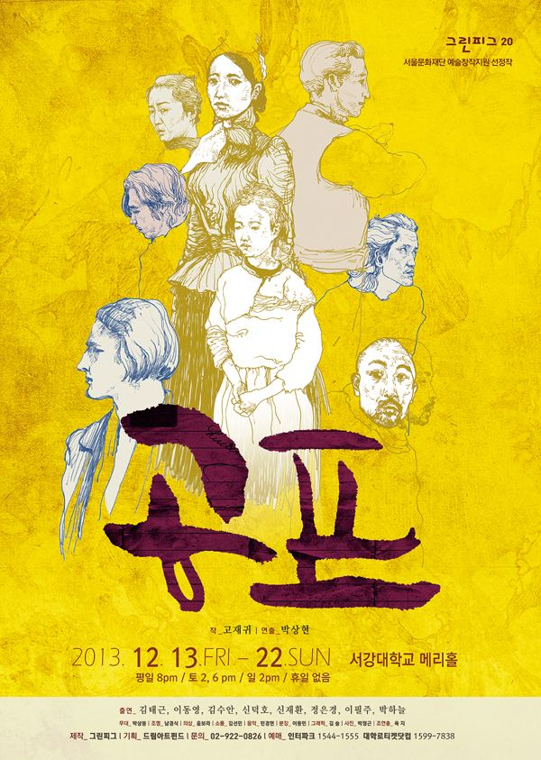

그린피그 > 아카이브 > 공포
고재귀 작, 박상현 연출

2013.12.13–22 / 서강대 메리홀 대극장 2014.9.25–10.5 / 서강대 메리홀 대극장 2018.5.4–13 / 대학로예술극장 대극장 - 서울연극제 재공연부문
이전: 〈데스데모나-웬 손수건에 관한 연극〉 | 다음: 〈오시비엥침 기록극〉 아카이브로 돌아가기 | 아무 작품이나
발행일 2026.11.9